Introduktion
Det här dokumentet beskriver ett verktyg som tagits fram inom projektet Grip on Life och som ska utgöra verksamhetsstöd i Skogsstyrelsens handläggning av avverkningsärenden inom och i anslutning till prioritierade vattendrag som kan omfattas av t.ex. Natura 2000.
Grundläggande är att verktyget ska ge ökad förståelse för hur vatten rör sig i landskapet och pekar ut ärenden/områden där det finns förhöjd risk för negativ påverkan av vattenkvalitet. Detta är egenskaper som är värdefulla i många av Skogsstyrelsens olika verksamheter och uppdrag.
Den uppenbara nyttan med verktyget är att använda det i Skogsstyrelsens tillsynsverksamhet. Dels för att förfina den automatiska analys som görs av ärenden men även tillhandahålla ett bättre visuellt underlag i de ärenden som handläggs manuellt. Ett tydligt visuellt underlag underlättar samverkan med andra myndigheter och skogliga aktörer.
Bakgrund
Påverkan av vattenmiljöer vid skogsbruksåtgärder
En betydande risk för negativ påverkan på vattendrag vid avverkning är körskador orsakade av skogsmaskiner som kan frigöra slam, humus, näring och tungmetaller som rinner ut i känsliga vattendrag. Områdets egenskaper som t.ex. jordart, markfuktighet och lutning är exempel på faktorer som avgör hur stor risken är.
Skogsstyrelsens befintliga handläggarstöd
Idag identifieras risken för negativ påverkan på känsliga vattendrag av Skogsstyrelsens analysmodul. Avverkningsanmälningar faller ut i analysen om området överlappar en buffertzon för särskilt värdefulla vatten, d.v.s. en enkel överlagringsanalys. För att i högre grad kunna klassificera de hydrologiska riskerna automatiskt, och därmed avlasta den manuella handläggningen, uppstår ett behov av ett verktyg som kan beskriva de hydrologiska faktorerna mer noggrant.
 Figur 1.A. Med en enkel buffertzon kan ärendeområden som ligger i närheten av
känsliga vattendrag hittas, men den reella risken kan bero på faktorer som inte
fångas. I det här exemplet kan en hydrologisk modell beräkna att ett vattendrag
som passerar området rinner via en vägtrumma ner mot recipienten. Bakgrundsbild
skapad utifrån Markhöjdmodell Nedladdning, grid 1+, Topografisk webbkarta
Visning, skiktindelad och Ortofoto färg, 0.5 m © Lantmäteriet.
Figur 1.A. Med en enkel buffertzon kan ärendeområden som ligger i närheten av
känsliga vattendrag hittas, men den reella risken kan bero på faktorer som inte
fångas. I det här exemplet kan en hydrologisk modell beräkna att ett vattendrag
som passerar området rinner via en vägtrumma ner mot recipienten. Bakgrundsbild
skapad utifrån Markhöjdmodell Nedladdning, grid 1+, Topografisk webbkarta
Visning, skiktindelad och Ortofoto färg, 0.5 m © Lantmäteriet.
Vad kan verktyget göra?
Verktyget utför hydrologisk analys och överlagringsanalys för att ta fram följande produkter:
- Hydrologisk information kopplat till avverkningsärendeområde
- Konnektivitet med prioriterade vattendrag (recipient)
- Kortaste rinnsträcka till recipient(er)
- Blöt mark nära genomströmmande vattendrag
- Maximal flödesackumulering
- Fördelning av markfuktighetsklasser
- Sammanställning av hydrologiska egenskaper för nedströms rinnvägar
- Hydrologiska egenskaper för nedströms rinnvägar, från avverkningsområde till recipient
- Konnektivitet med prioriterade vattendrag
- Genomsnittligt sedimenttransportindex längs rinnvägssegment
- Genomsnittlig lutning längs rinnvägssegment
- Genomsnittlig flödesackumulering längs rinnvägssegment
En mer detaljerad beskrivning av de beräknade egenskaperna ovan beskrivs i avsnittet Utdata.
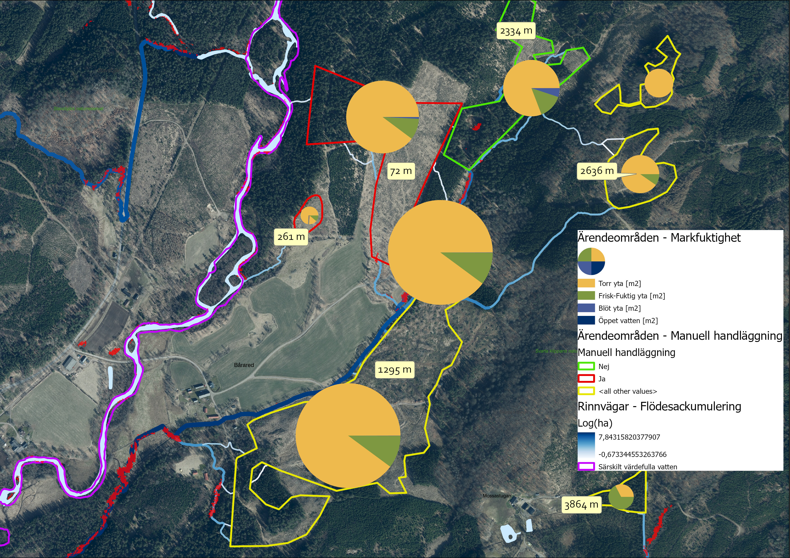 Figur 1.B. Exempel på visualisering av bl.a. rinnvägar med flödesackumulering, längd på rinnsträckor från avverkningsområde till recipient samt fördelning av markfuktighetsklasser. Resultat skapat utifrån SLU Markfuktighetskarta och Markhöjdmodell Nedladdning, grid 1+ © Lantmäteriet. Bakgrundsbild: Topografisk webbkarta Visning, skiktindelad och Ortofoto färg, 0.5 m © Lantmäteriet.
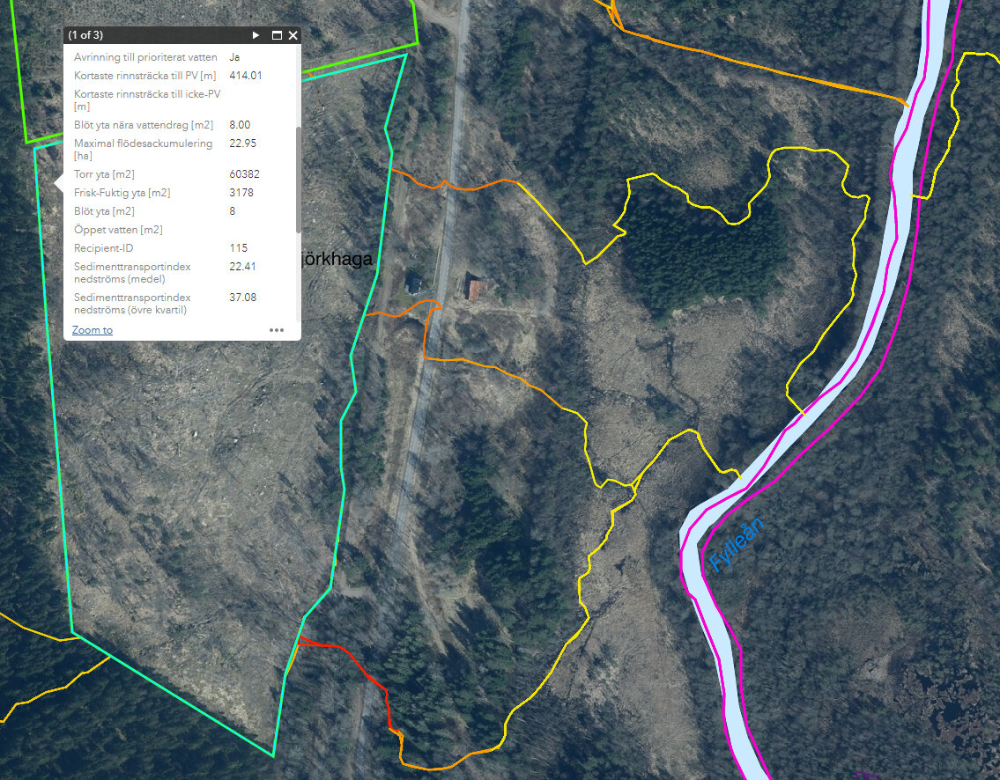 Figur 1.C. Exempel på visning av hydrologisk information kopplat till avverkningsområde samt symbolisering av sedimenttransportindex längs rinnvägar. Resultat skapat utifrån SLU Markfuktighetskarta och Markhöjdmodell Nedladdning, grid 1+ © Lantmäteriet. Bakgrundsbild: Topografisk webbkarta Visning, skiktindelad och Ortofoto färg, 0.5 m © Lantmäteriet.
Indata
Nedan presenteras indata som används i modellen. De specificerade produkterna är de som använts vid utveckling av verkytget men andra underlag med motsvarande egenskaper kan användas. Några indata är obligatoriska för att köra modellen medan övriga är frivilliga men rekommenderade för att erhålla ett bra resultat.
| Data | Typ | Krav | Produkt |
|---|---|---|---|
| Höjdmodell (terrängmodell) | Raster, GeoTIFF | Ja | Lantmäteriets Markhöjdmodell Nedladdning, grid 1+ 1 |
| Diken | Vektor, linjer | Nej | SLU Dikeskartor 2 |
| Vattendrag | Vektor, linjer | Nej | Lantmäteriets Terrängkartan 3 |
| Vägar + järnvägar | Vektor, linjer | Nej | Lantmäteriets Terrängkartan 3 |
| Väg-/järnvägstrummor | Vektor, punkter | Nej | Trafikverkets datapaket Vägtrummor punkter geografisk vy 4 |
| Recipienter med prioklasser | Vektor, polygoner | Ja | Klassade5 vattenförekomster (ytor) från Terrängkartan 3 |
| Avverkningsanmälansområden | Vektor, polygoner | Ja | Ytor kopplade till avverkningsanmälningar från Skogsstyrelsen |
| Markfuktighetskarta | Raster, GeoTIFF | Ja | SLU Markfuktighetskarta 6 |
https://lastkajen.trafikverket.se/productpackages/10170 [kräver inloggning]
Klassning (prio/ej prio) görs med hjälp av annat underlag som anses representera recipienter som kräver extra hänsyn
Metodöversikt
Processen för modelleringen kan grovt delas upp i fyra faser enligt nedan.
- 1. Förberedelser av hydrologisk höjdmodell
- 2. Beräkna regionala hydrologiska egenskaper
- 3. Beräkna zonstatistik inom varje påverkande område
- 4. Beräkna rinnvägar från påverkande område
Förberedelser av hydrologisk höjdmodell
För att kunna göra hydrologiska analyser med ett tillfredställande utfall behöver höjdmodellen bearbetas i ett antal steg.
Figur 3.1.A. Flödesschema över de steg som ingår i bearbetning av den hydrologiska höjdmodellen
Omvandla upplösning/cellstorlek
Markhöjdmodeller i gridformat (raster) med upplösningar <= 1 m ger en hög detaljrikedom men ofta är det lämpligt att omvandla höjmodellen till en grövre upplösning då beräkningarna görs snabbare på större och färre raster-celler. Även om beräkningskraft och hastighet inte är ett problem kan upplösningen ha betydelse för modellering och beskrivning av hydrologin. En grövre upplösning skulle möjligen bättre kunna representera de generella rörelserna av både ytvatten och ytligt grundvatten.
Bränna in passager över vägar vid kända vägtrummor
I en opreparerad höjdmodell utgör bankar och diken, vid vägar och järnvägar, barriärer för de rinnvägar som ska modelleras. I verkligheten passerar vattnet genom vägar och järnvägar via trummor. För att simulera detta kan barriärerna brytas upp där vi känner till att det finns trummor. Vägtrummor som punkter förankras till väglinjer och buffras sedan till cirklar med en given radie. Inom varje cirkel sänks höjdmodellen till det minsta höjdvärdet inom cirkeln.
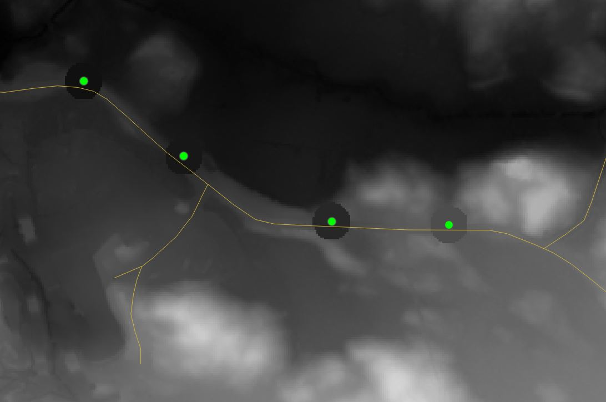
Figur 3.1.B. Inom cirkulära zoner runt kända trummor sänks höjdmodellen till den lägsta nivån för att skapa passage för rinnvägar genom väg och järnväg. Vektordata från Terrängkartan © Lantmäteriet och Vägtrummor punkter geografisk vy (Trafikverket). Bakgrundskarta: Markhöjdmodell Nedladdning, grid 1+ © Lantmäteriet
Bränna in passager över vägar vid kända vattendrag
Även större vattendrag, från t.ex. en topografisk karta, kan bli "blockerade" i höjmodellen där de passerar en väg- eller järnvägsbro. Vattnets passage i de här korsningarna kan brännas in på liknande sätt som för trummor men där istället vattendragens kända väg används för att hitta skärningspunkter med väg- och järnvägslänkarna. Se exempel i Whitebox-manualen.
Bränna in kända diken från dikeskartering
För att ytterligare komplettera detaljgraden i den hydrologiska höjdmodellen så är det lämpligt att integrera en kartering av diken i skogsmark i höjdmodellen. Dikena, som är vektoriserade, "bränns" in i höjdmodellen med metoden FillBurn.
Eliminera sänkor med bryta-fyll-metoden
Det sista steget i förberedelser av den hydrologiska höjdmodellen är att skapa kontinuerliga rinnvägar genom att i första hand "bryta" ut en väg från en sänka till en lägre punkt i närheten och i andra hand fylla upp sänkor. Mer information om den här metoden finns bl.a. i Whitebox-manualen.
De här verktyget använder metoden BreachDepressions men författaren
rekommenderar istället att använda varianten BreachDepressionsLeastCost.
Skillnader i utfallet har inte studerats inom ramen för det här projektet.
Beräkna regionala hydrologiska egenskaper
Med regional avses hela det område, t.ex. ett större vattendrags avrinningsområde, som verktyget ska kunna utföra beräkningar för. Området mostvarar utbredningen för höjdmodellen i föregeånde steg och de beräknade egenskaperna kopplas i efterföljande steg till ärendepolygoner och rinnvägar inom området.
Följande moment ingår i processen för beräkning av regionala hydrologiska egenskaper som resulterar i ett antal raster-dataset, d.v.s. att för varje ytenhet (beroende på höjdmodellens upplösning) presentera information som på något sätt är kopplat till flödesackumulering. Bearbetningen kan vara relativt tidskrävande men resultatet för hela (regionala) området kan återanvändas för återkommande bearbetning av flera avverkningsärendeområden.
- Beräkna flödesackumulering som specfikt avrinningsområde [m2]
- Beräkna flödesackumulering som specfikt avrinningsområde [ha]
- Extrahera vattendrag från flödesackumulering >
xha - Beräkna avstånd till extraherade vattendrag - nära vattendrag
- Extrahera markfuktighet blöt vid nära vattendrag
- Beräkna lutning i varje cell
- Beräkna sedimenttransportindex i varje cell
Figur 3.2.A. Process för beräkning av olika representationer av flödesackumulering
Egenskaper med koppling till recipient
Recipienter är de vattendrag som det är av intresse att studera avrinning till från påverkande avrinningsområden, d.v.s. avvkerkningsområden.
I följande steg beräknas allokering, d.v.s. vilken recipient som berörs av vad, samt rinnavstånd till recipient. Indata är vektoriserade ytor som representerar vattendragen och måste ha ett ID samt vara klassade som prioriterat eller icke prioriterat vattendrag (PRIO=1, PRIO=0).
-
Beräkna flödesriktningsraster (D8)
-
Maska bort vattenkroppar från flödesriktningsraster
Detta steg "inaktiverar" avrinning i maskningsområdet (recipienterna) vilket ger resultatet att allokeringsspårning stannar när en recipient har nåtts.
-
Omvandla recipientvektorytor till raster med ID
-
Omvandla recipientvektorytor till raster med information om prioritet
-
Separera prio-raster i två raster - prio, ej prio
-
Beräkna raster med rinnavstånd till prio / ej prio
-
Vektorisera allokeringsraster till polygoner med recipient-ID
-
Hämta information om prioritet från recipientpolygoner till allokeringspolygoner
Figur 3.2.B. Process för beräkning av allokering och rinnavstånd till recipienter
Beräkna zonstatistik inom varje påverkande område
- Beräkna kortaste rinnsträckan till både prioriterade och icke-prioriterade vatten
- Beräkna statistik för markfuktighetskarta
- Beräkna maximal flödesackumulering
Beräkna rinnvägar från påverkande område
Beräkning av rinnvägar utgående från påverkande områden görs iterativt per område genom att spåra nedströms från ett antal punkter inom området som bedöms sammanfalla med betydande flödesackumulering. Med andra ord kan detta beskrivas som hur stort det bidragande avrinningsområdet till en punkt måste vara för att ytvatten ska bildas. Detta tröskelvärde varierar mellan olika delar av landet och årstider. Beräkningsprocessen kan liknas med att släppa en vattendroppe i varje sådan punkt och följa dem till de når en recipient.
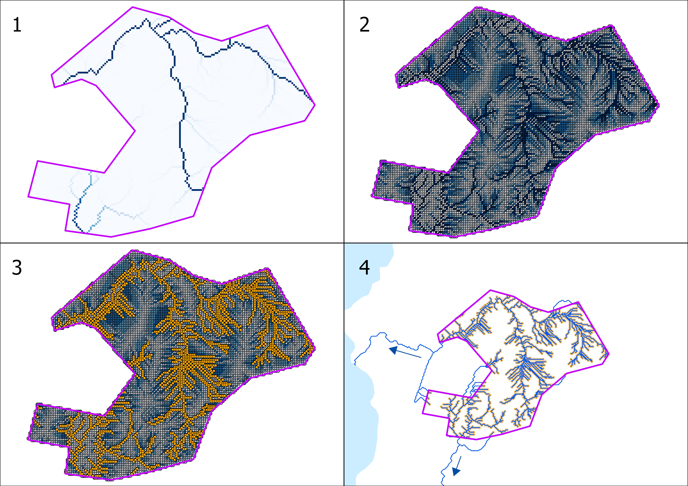 Figur 3.4.A. Beräkning av rinnvägar för ett ärendeområde med avrinning till utpekade recipienter skapat utifrån Markhöjdmodell Nedladdning, grid 1+ © Lantmäteriet.
I figur 3.4.A illustreras principen för processen att extrahera rinnvägar för ett ärendeområde med avrinning till utpekade recipienter. Processen kan grovt delas upp i fyra steg:
- Klipp flödesackumuleringsraster till ärendeområdet
- Omvandla klippt flödesackumulering till vektorpunkter (och behåll värde som attribut)
- Filtrera fram punkter med betydande flödesckumulering
- Beräkna nedströms rinnvägar från utvalda punkter och stanna spårning vid träff av recipient
Efterbearbetning av rinnvägar
-
Slå samman rinnvägar från alla avverkningsområden
-
Ta bort segment inom ärendeområden
Det här steget rensar bort många små segment som ligger nära källpunkterna och påverkar efterföljande beräkningstid och datamängd signifikant
-
Rasterisera sammanslagna rinnvägar
-
Beräkna rinnvägslutning längs rasteriserade rinnvägar
-
Dela upp rinnvägar i segment som är minst
xm långa -
Buffra segment med
ym -
Beräkna medelvärde av rinnvägslutning inom varje buffertsegment
-
Beräkna medelvärde av sedimenttransportindex inom varje buffertsegment
-
Beräkna medelvärde av flödesackumulering inom varje buffertsegment
-
Överför beräknad statistik till linjesegment
-
Utjämna (smooth) segmenterade rinnvägar med statistik
-
Hämta information om recipient
Utdata
Ärendepolygoner med hydrologisk statistik
- Med "området" avses respektive ärendes geografiska yta.
- Eventuella ärendeegenskaper som finns med i indata beskrivs ej nedan
| Egenskap | Kolumn | Beskrivning |
|---|---|---|
| Ärende-ID | id | Polygonens objekt-ID |
| Ärendebeteckning | arende_bet | Ärendebeteckning |
| Manuell handläggning | man_handl | Bedömning manuell handläggning (0=Nej, 1=Ja) |
| Motivering, handläggning | motivering | Motivering för eller emot manuell handläggning |
| Avrinning till prioriterat vatten | prio | Avrinning från området når prioriterat vattendrag (utan passage via ej prioriterat vatten) (0=Nej, 1=Ja) |
| Kortaste rinnsträcka (m) till PV | dstpr_min | Minsta rinnavstånd (m) till prioriterat vattendrag |
| Kortaste rinnsträcka (m) till icke-PV | dstnp_min | Minsta rinnavstånd (m) till ej prioriterat vattendrag |
| Blöt yta nära vattendrag | wetstr_sum | Summerad yta (m2) av blött område som ligger inom 5 m till ett vattendrag med minst 10 ha tillrinningsyta |
| Maximal flödesackumulering (ha) | flwacc_max | Maximal flödesackumulering i en punkt inom området som specifik avrinningsyta (ha) |
| Torr yta (m2) | dry | Areal (m2) inom området som utgörs av TORR mark enl. markfuktighetskarta |
| Frisk-Fuktig yta (m2) | dmp | Areal (m2) inom området som utgörs av FRISK-FUKTIG mark enl. markfuktighetskarta |
| Blöt yta (m2) | wet | Areal (m2) inom området som utgörs av BLÖT mark enl. markfuktighetskarta |
| Öppet vatten (m2) | wtr | Areal (m2) inom området som utgörs av ÖPPET VATTEN enl. markfuktighetskarta |
| Torr yta (%) | dry_frac | Andel av området som utgörs av TORR mark enl. markfuktighetskarta |
| Frisk-Fuktig yta (%) | dmp_frac | Andel av området som utgörs av FRISK-FUKTIG mark enl. markfuktighetskarta |
| Blöt yta (%) | wet_frac | Andel av området som utgörs av BLÖT mark enl. markfuktighetskarta |
| Öppet vatten (%)] | wtr_frac | Andel av området som utgörs av ÖPPET VATTEN enl. markfuktighetskarta |
| Recipient-ID | trgt_fid | Objekt-ID för recipienten (vattendragsyta) |
| Sedimenttransportindex nedströms (medel) | st_avg_avg | Medelvärde av genomsnittligt sedimenttransportindex för rinnvägar nedströms området |
| Sedimenttransportindex nedströms (övre kvartil) | st_avg_q3 | Övre kvartil av genomsnittligt sedimenttransportindex för rinnvägar nedströms området |
| Lutning nedströms (medel) | slp_avg_avg | Medelvärde av genomsnittlig flödesvägslutning för rinnvägar nedströms området |
| Lutning nedströms (övre kvartil) | slp_avg_q3 | Övre kvartil av genomsnittlig flödesvägslutning för rinnvägar nedströms området |
| Flödesackumulering nedströms (medel) | fla_avg_avg | Medelvärde av genomsnittlig flödesackumulering för rinnvägar nedströms området |
| Flödesackumulering nedströms (övre kvartil) | fla_avg_q3 | Övre kvartil av genomsnittlig flödesackumulering för rinnvägar nedströms området |
Avrinning till prioriterat vatten (PV)
Om värdet på egenskapen är Ja indikerar detta att avrinning från området når en PV-recipient via en eller flera rinnvägar i landskapet nedströms. Om rinnvägarna i verkligheten för strömmande vatten beror i sin tur på om flödesackumulering är tillräckligt stor i kombination med andra faktorer som t.ex. nederbörd.
Om värdet är Nej innebär det att modellen har stannat spårning nedströms när en vattenkropp som är icke-PV påträffats, samtidigt som PV inte har påträffats längs rinnvägar i någon annan riktning. Det kan ändå finnas konnektivitet med PV via icke-PV som spårning stannat i, vilket i praktiken innebär att icke-PV agerar som buffertreservoar (se exempel i figur 4.1.1.A).
Om bedömning saknas betyder det att flödesackumulering inom aktuellt område inte överstiger det tröskelvärde som ges till modellen för att bestämma när ytavrinning bildas.
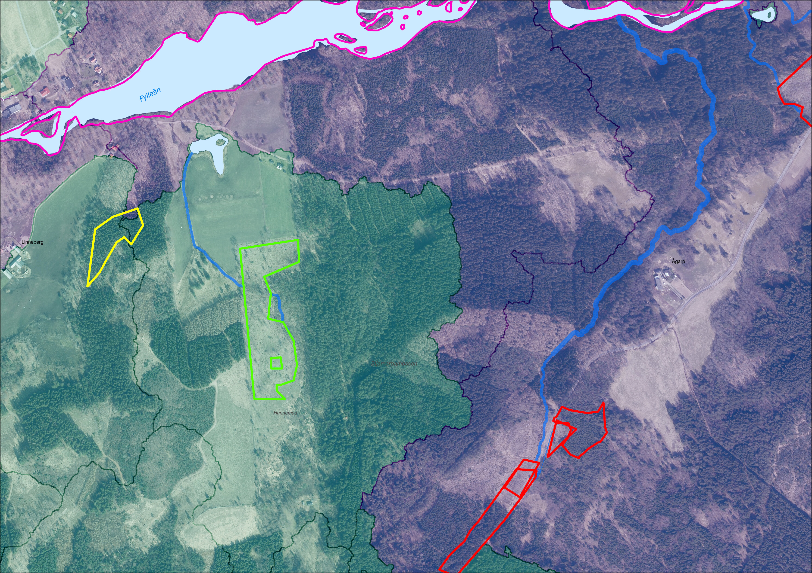 Figur 4.1.1.A. Ärendeområden allokeras till recipient med hjälp av delavrinningsområden. Avrinning från grönt område slutar i icke-PV medan rött når PV. Gult område överlappar tre delavrinningsområden, varav ett till PV, men flödesackumulering är inte tillräckligt stor. Resultat skapat utifrån Markhöjdmodell Nedladdning, grid 1+ © Lantmäteriet. Bakgrundsbild: Topografisk webbkarta Visning, skiktindelad och Ortofoto färg, 0.5 m © Lantmäteriet.
Kortaste rinnsträcka till PV / icke-PV
Inom varje ärendeområde beräknas den kortaste rinnsträckan till både PV- och icke-PV-recipienter. Ibland finns det flera rinnvägar till samma recipient men det är enbart det kortaste avståndet som redovisas. För fall där avrinning inte sker till PV respektive icke-PV, p.g.a. låg flödesackumulering, redovisas ingen rinnsträcka.
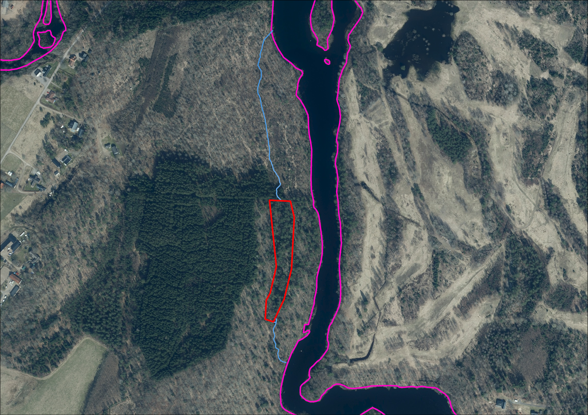 Figur 4.1.2.A. Avrinning från ett avverkningsområde sker via två vägar till samma recipient. Den kortaste rinnsträckan (södra) redovisas kopplat till ärendet. Resultat skapat utifrån Markhöjdmodell Nedladdning, grid 1+ © Lantmäteriet. Bakgrundsbild: Topografisk webbkarta Visning, skiktindelad och Ortofoto färg, 0.5 m © Lantmäteriet.
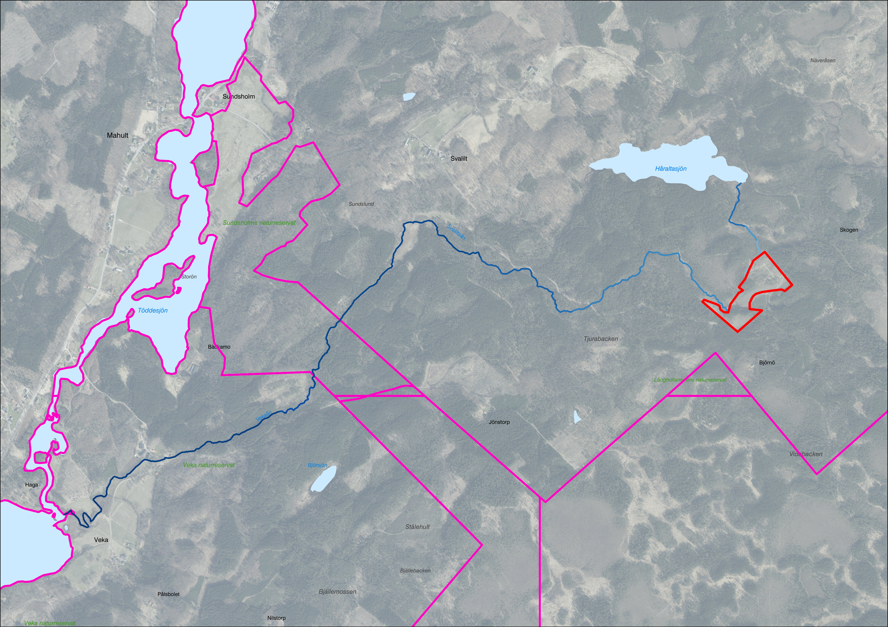 Figur 4.1.2.B. Avrinning från ett avverkningsområde sker till både PV och icke-PV. Den kortaste rinnsträckan för respektive recipient redovisas kopplat till ärendet. Resultat skapat utifrån Markhöjdmodell Nedladdning, grid 1+ © Lantmäteriet. Bakgrundsbild: Topografisk webbkarta Visning, skiktindelad och Ortofoto färg, 0.5 m © Lantmäteriet.
Arealer och andelar av markfuktighetsklasser inom ärendeområden
Inom ärendeområden kan yta som utgörs av markfuktighetskartans olika klasser summeras. Förekomst av klasserna summeras var för sig, både som absolut mått (m2) och som andel av områdets totala yta. De fyra klasserna är:
- Torr
- Frisk-fuktig
- Blöt
- Öppet vatten
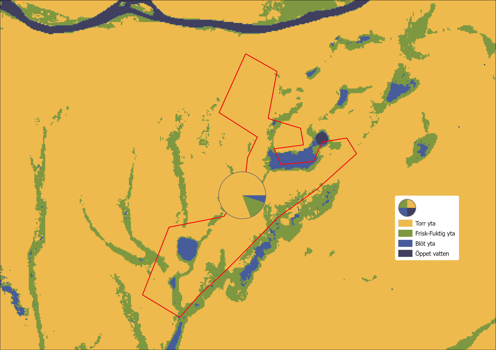 Figur 4.1.3.A. Arealer av de olika markfuktighetsklasserna infom ett område summeras och redovisas. Resultat och bakgrundsbild skapat utifrån SLU Markfuktighetskarta.
Blöt yta nära vattendrag
Ytor inom ärendeområdet som är klassade som blöt (ej öppet vatten) enligt markfuktighetskarta och som sammanfaller med vattendrag (eller sannolik förekomst av strömmande vatten) bedöms utgöra en betydande risk vid körskador.
För att kvantifiera förekomsten av en sådan risk måste först identifiering av vattendrag, som passerar området, ske. Extrahering av sådana vattendrag görs från höjdmodell baserat på punkter där flödesackumulering överstiger ett bestämt tröskelvärde (t.ex. 10 ha). Därefter beräknas en X meter (5 m i exempel nedan) bred buffertzon längs vattendragen, men enbart där blöt mark förekommer. Den resulterande ytan (m2) summeras inom området och utgör värdet för denna egenskap.
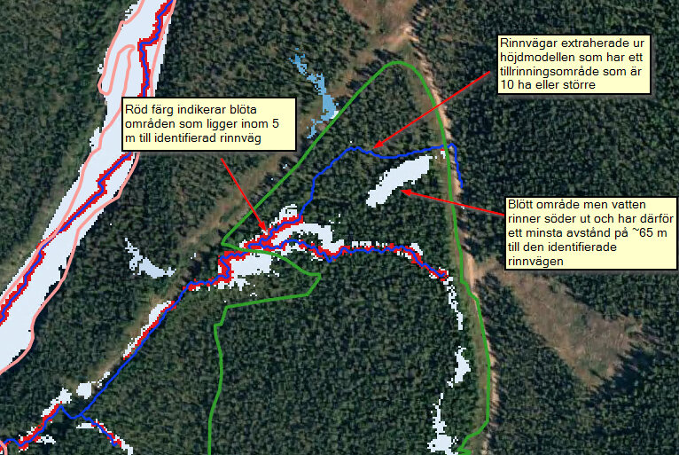 Figur 4.1.4.A. Blöt yta nära vattendrag. Resultat skapat utifrån SLU Markfuktighetskarta och Markhöjdmodell Nedladdning, grid 1+ © Lantmäteriet. Bakgrundsbild: Topografisk webbkarta Visning, skiktindelad och Ortofoto färg, 0.5 m © Lantmäteriet.
Rinnvägslinjer för avrinning nedströms ärendeytor
- Rinnvägar är uppdelade i segment om X meter (standard är 100 m)
| Egenskap | Kolumn | Beskrivning |
|---|---|---|
| Segment-ID | segm_id | Linjesegmentets objekt-ID |
| Ärende-ID | area_id | Objekt-ID för ärendepolygon där avrinnningen startar |
| Recipient-ID | trgt_fid | Objekt-ID för målet (vattendragsyta) |
| Avrinning till prioriterat vatten | prio | Avrinning når prioriterat vattendrag (utan passage via ej prioriterat vatten) (0=Nej, 1=Ja) |
| Sedimenttransportindex segment (medel) | st_avg_avg | Genomsnittligt sedimenttransportindex för rinnvägssegementet |
| Lutning segment (medel) | slp_avg_avg | Genomsnittlig flödesvägslutning för rinnvägssegementet |
| Flödesackumulering segment (medel) | fla_avg_avg | Genomsnittlig flödesackumulering för rinnvägssegementet |
Segmentindelning, avrinningsområde och recipient
Rinnvägar nedströms ett ärendeområde delas upp i segment om valfritt antal meter i den mån det är möjligt. Syftet med uppdelningen är att möjliggöra statistisk sammanställning av karaktärer för rinnvägarna som t.ex. lutning, sedimenttransport och flödesackumulering. Figur 4.2.1.A visar ett exempel på hur en sådan segmentindelning kan se ut. Identiteter för ärendeområdet där rinnvägen startar och recipienten där rinnvägen slutar redovisas i attribut för varje segment.
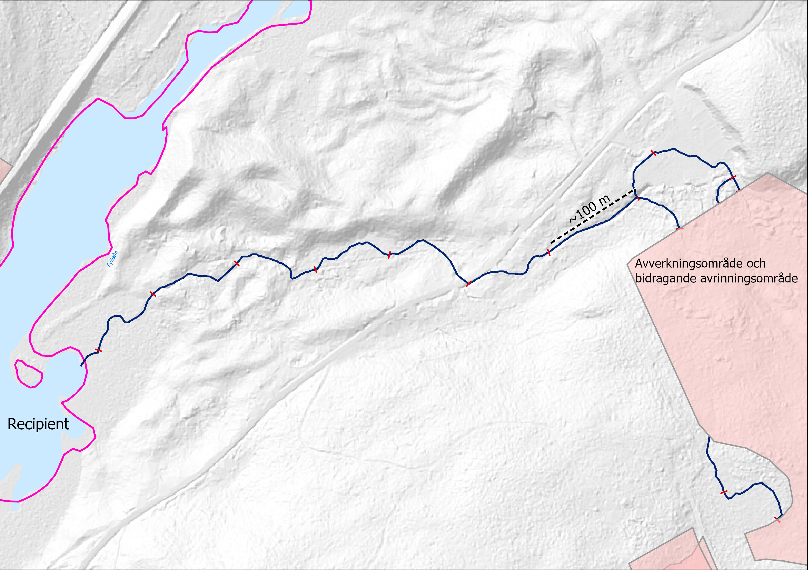 Figur 4.2.1.A. Segmenterad rinnväg från ett avverkningsområde till en recipient skapat utifrån Markhöjdmodell Nedladdning, grid 1+ © Lantmäteriet. Bakgrundsbild: Topografisk webbkarta Visning, skiktindelad och Markhöjdmodell Nedladdning, grid 1+ © Lantmäteriet.
Sedimenttransport
Sedimenttransportindex är ett mått på transportkapaciteten för ytavrinning som beräknas utifrån en höjdmodell. Måttet är enhetslöst och därför i sammanhanget bara användbart för att avgöra om det i en given punkt finns förutsättningar för mer eller mindre transport i jämförelse med en annan punkt i landskapet. Det kan användas istället för en längd-lutning-faktor för avstånd mindre än 100 m och lutningar mindre än 14 grader. Beräkningar i den här modellen görs med rasterpixelstorlek på max ett fåtal meter och bör därför gälla. Indexet beräknas med följande formel:
STI = (m + 1) × (A_s / 22.13)^m × sin(B / 0.0896)^n
Där A_s är det specifika avrinningsområdet, m är exponent för bidragande avrinningsområde (vanligtvis 0.4), B är lutningen och n lutningsexponent (vanligtvis 1.4).
Förenklat säger sambandet att ju högre avrinningsområde och ju större lutning (upp till ~16 grader) desto större blir erosionsrisken och sedimenttransporten.
Längs varje rinnvägssegment beräknas ett medelvärde för sedimenttransportindex.
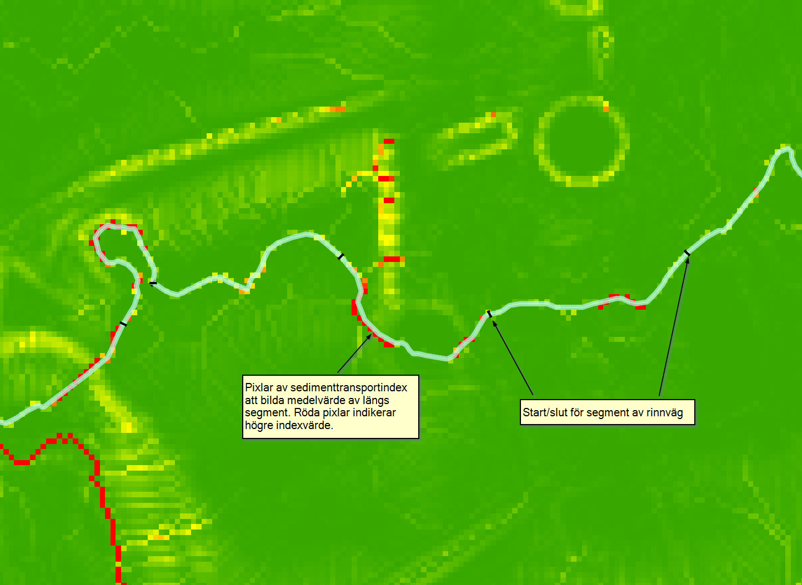 Figur 4.2.2.A. Medelvärde av sedimentransportindex beräknas för varje segment av rinnvägen. Resultat skapat utifrån Markhöjdmodell Nedladdning, grid 1+ © Lantmäteriet.
Lutning
På samma sätt som medelvärde för sedimenttransportindex beräknas per rinnvägssegment, beräknas även medelvärde för längsgående lutning och som redovisas i absoluta mått i form av grader.
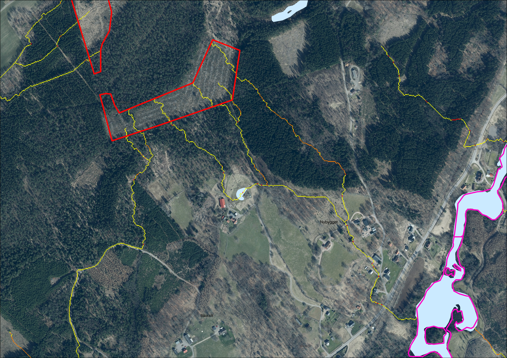 Figur 4.2.3.A. Lutning per pixel beräknas längs rinnvägar identifierade vid spårningen nedströms. Resultat skapat utifrån Markhöjdmodell Nedladdning, grid 1+ © Lantmäteriet. Bakgrundsbild: Topografisk webbkarta Visning, skiktindelad och Ortofoto färg, 0.5 m © Lantmäteriet.
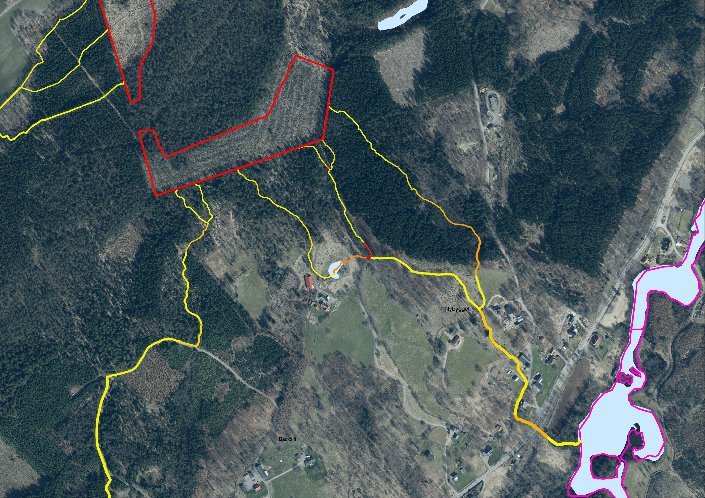 Figur 4.2.3.B. Medelvärde av lutning längs varje segment beräknas och sammanställs på segmentets vektorrepresentation. Resultat skapat utifrån Markhöjdmodell Nedladdning, grid 1+ © Lantmäteriet. Bakgrundsbild: Topografisk webbkarta Visning, skiktindelad och Ortofoto färg, 0.5 m © Lantmäteriet.
Flödesackumulering
Med flödesckumulering menas i det här sammanhanget samma sak som specifikt avrinningområde, d.v.s. det område som finns uppströms en given punkt och bidrar med att fånga upp ytavrinning som leds till punkten. Varje pixel i höjdmodellen kan vara en sådan punkt och därmed kan också flödesackumulering beräknas för varje pixel i höjdmodellen. Måttet redovisas i enhet hektar (ha).
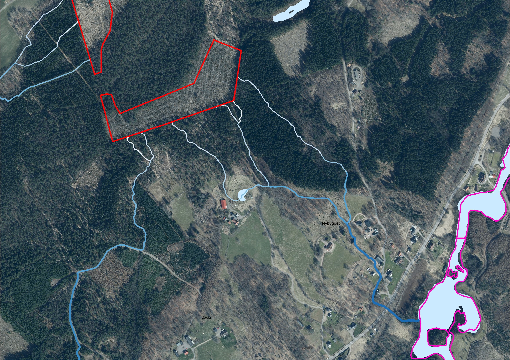 Figur 4.2.4.A. Längsgående medelvärde av flödesackumulering inom en smal buffert längs rinnvägarna beräknas och visualiseras bäst i logaritmisk skala. Resultat skapat utifrån Markhöjdmodell Nedladdning, grid 1+ © Lantmäteriet. Bakgrundsbild: Topografisk webbkarta Visning, skiktindelad och Ortofoto färg, 0.5 m © Lantmäteriet.
Implementering
Verktyget utgörs av ett Python-paket med en huvudmodul och ett par hjälpmoduler för körning av hela processen från början till slut. Programmet körs med konfiguration som anges via argument eller fil.
- Läs argument/konfigurationsfil
- Kör modul
dem.pyför att förbereda hydrologisk höjdmodell och andra raster för hela analysområdet - Starta modul
area.pyför bearbetning av ett eller flera avverkningsområden (polygoner)
Normalfallet är att steg 2 körs en gång för att producera ett resultat som kan användas av steg 3 upprepade gånger. En cache-funktion används för att möjliggöra återanvändning av intermediära data. Resultatet från steg 3 kan läggas till befintliga dataset.
Detaljerade instruktioner om körning av verktyget hittas i dokumentet
README.md i roten av verktygets utvecklingskatalog (GIT repository).
Bibliotek
WhiteboxTools
- Vad är WhiteboxTools?
- Öppen källkod - Rust
- Python interface (wrapper till binär)
- Hydrologiska verktyg
- Begränsat stöd vektordataformat - ESRI Shape
- Manual
Övriga geospatiala
- Geopandas (vektor)
- Rasterio (raster)
- rasterstats (raster)
Samtliga tre bygger i grunden på GDAL och av den anledningen har Conda använts som Python-pakethanterare för att underlätta installation av GDAL.